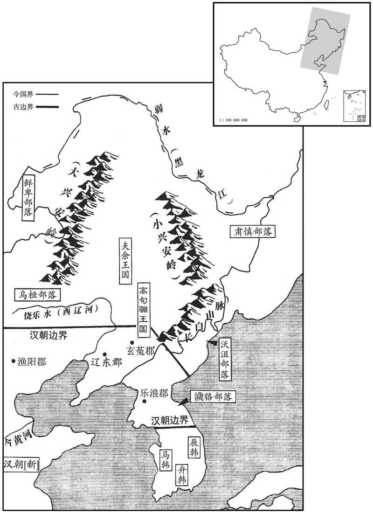

公元12年资治通鉴：本年记事、原文与白话对照
按原书编年位置阅读；追叙和史论不等于本年发生的事件。白话采用所据译本，缺译不以生成译文补齐。
卷37 · 本年记事
公元12年 · 汉孝平皇帝始建国四年
四年〔（壬申、一二）〕
本年事件索引（现代整理）

本年形势与背景参考图
春，二月，赦天下。
春季，二月，大赦天下。
厌难将军陈钦、震狄将军王巡上言：「捕得虏生口验问，言虏犯边者皆孝单于咸子角所为。」莽乃会诸夷，斩咸子登于长安市。
厌难将军陈钦、震狄将军王巡上书说：“在边塞捕得匈奴人审问，供称匈奴屡次侵犯边塞，都是孝单于栾提咸的儿子 栾提角所为。”王莽于是召集各族驻在京师的使节，在长安的街市上把栾提咸的儿子栾提登斩首。
大司马甄邯死。〔甄，之人翻。邯，户甘翻。〕
大司马甄邯去世。
莽至明堂，下书：「以洛阳为东都，常安为西都。邦畿连体，各有采、任。〔男食邑于畿内曰采；女食邑于畿内曰任。师古曰：采，采服也。任，男服也。〕州从禹贡为九；爵从周氏为五。〔禹贡冀、兖、青、徐、扬、豫、荆、雍、梁，凡九州岛。周爵公、侯、伯、子、男，凡五等。〕诸侯之员千有八百，〔八州，州二百一十国，并畿内凡千七百七十三国。言千八百国，举成数也。〕附城之数亦如之，以俟有功。诸公一同，〔地方百里曰同。〕有众万户，其余以是为差。今已受封者，公侯以下凡七百九十六人，附城千五百五〔【章：十二行本「五」作「一」；乙十一行本同；孔本同。】〕十一人；以图簿未定，未授国邑，且令受奉都内，〔奉，读曰俸。都内，积钱之府，属大司农。〕月钱数千。」诸侯皆困乏，至有佣作者。
王莽到明堂下诏：“把洛阳定为东都，常安定为西都。国家疆域联合一体，男女各有封地。遵从《禹贡》的记载，全国划为九州。依照周王朝制度，分为五等爵位，共一千八百个封国，附城的数量也是如此，以等待有功之士。凡是公爵，一律平等，封一万户人家。其他爵位，由此等差而下。现在已经受封的，公侯及以下共七百九十六人，附城一千五百五十一人。只因户籍地簿还没有调查测量完竣，没有授予封地。所以暂且让他们向属于大司农的都内专领薪俸，每月钱数千。”诸侯都贫困，有的甚至受雇为人做工。
莽性躁扰，不能无为，〔躁，则到翻。〕每有所兴造，动欲慕古，不度时宜，〔度，徒洛翻。〕制度又不定；吏缘为奸，天下謷謷，陷刑者众。〔师古曰：謷謷，众口愁声，音敖。〕莽知民愁怨，乃下诏：「诸食王田，皆得卖之，勿拘以法。犯私买卖庶人者，且一切勿治。」〔治，直之翻。〕然他政誖乱，刑罚深刻，赋敛重数，犹如故焉。〔誖，蒲内翻。数，所角翻。〕
王莽性格浮躁，不能安静下来，每干一件事情，总想模拟古代，不管是否适合现实社会。而制度始终未能确定，贪官污吏乘机为非作歹，天下一片悲愁，被处以刑罚的人很多。王莽知道老百姓忧愁怨恨，于是下诏：“凡是持有国家土地的，都可以自由变卖，不受法律限制。犯法私自买卖平民的，暂且都不处罚。”然而，其他政令荒谬混乱，刑罚残酷，捐税沉重而频繁，则依然如故。
初，五威将帅出西南夷，改句町王为侯，王邯怨怒不附。〔师古曰：邯，句町王之名也，音下甘翻。〕莽讽牂柯大尹周歆诈杀邯。〔牂柯，音臧哥。考异曰：西南夷传作「周钦」。莽传作「周歆」，今从之。〕邯弟承起兵杀歆，州郡击之，不能服。莽又发高句骊兵击匈奴；高句骊不欲行，郡强迫，皆亡出塞，因犯法为寇。〔强，其两翻。〕辽西大尹田谭追击之，为所杀。州郡归咎于高句骊侯驺，严尤奏言：「貉人犯法，不从驺起；〔貉，与貊同，莫百翻。后汉书，句骊，一名貊耳。〕正有他心，宜令州郡且尉安之。〔师古曰：假令驺有恶心，亦当且慰安。〕今猥被以大罪，〔师古曰：猥，多也，厚也。被，加也，音皮义翻。余谓猥，积也，曲也。〕恐其遂畔，夫余之属必有和者。〔和，胡卧翻。〕匈奴未克，夫余、濊貉复起，此大忧也。」〔后汉书：濊与句骊同种，言语法俗大抵相类，各有部界。复，扶又翻。〕莽不尉安，濊貉遂反；诏尤击之。尤诱高句骊侯驺至而斩焉，传首长安。〔驺，侧尤翻。〕莽大说，更〔【章：十二行本「更」上有「下书」二字；乙十一行本同；孔本同；退斋校同。】〕名高句骊为下句骊。〔说，读曰悦。更，工衡翻；下同。〕于是貉人愈犯边，东北与西南夷皆乱。〔东，濊貊；北，匈奴也。〕莽志方盛，以为四夷不足吞灭，专念稽古之事，复下书：「以此年二月东巡狩，具礼仪调度。」〔复，扶又翻。调，徒吊翻。〕既而以文母太后体不安，且止待后。
当初，五威将帅去西南夷，把句町王改为侯，句町王邯怨恨愤怒，不愿服从。王莽示意柯郡大尹周歆采用欺骗手段杀死了邯。邯的弟弟承起兵杀死周歆。州郡官府发兵讨伐，不能征服。王莽又调动高句丽的军队进攻匈奴，高句丽人不想去，受到郡府强迫，就都逃出边界。于是触犯法律，抢劫杀人。辽西郡大尹田谭追击他们，被他们杀死了。州郡长官把罪责归在高句丽侯驺的身上，严尤报告说：“貉人犯法，不是从驺起始的，即使他们有别的用心，应当命令州郡权且安抚他们。现在滥加重大罪名，恐怕他们会因此叛乱，而夫馀等部族一定会有附和的。匈奴汉有打败，夫馀和秽貉又起来，这是大忧患啊！”王莽不加安抚，秽貉于是反叛。王莽下诏命严尤进击。严尤引诱高句丽侯驺到来而把他杀了，传递首级到长安。王莽非常高兴，把高句丽改名为下句骊。于是貉人更加侵犯边境，东部、北部和西南的各蛮夷族都乱起来了。王莽正在志得意满，认为四方蛮夷各族用不着费多大力气就能够加以吞并、消灭，一心想查考古代的作法加以仿效，又下诏书说：“在本年二月，我要到东方巡行视察，有关部门要把礼仪程序开列出来。”随后，因为文母皇太后身体有病，下令暂缓出发。
初，莽为安汉公时，欲谄太皇太后以斩郅支功，奏尊元帝庙为高宗；〔事见上卷元始四年。〕太后晏驾后，当以礼配食云。及莽改号太后为新室文母，绝之于汉，不令得体元帝，堕坏孝元庙。〔师古曰：夫妇一体也。堕，毁也，音火规翻。坏，音怪。〕更为文母太后起庙；独置孝元庙故殿以为文母篹食堂，〔置，舍也，留也。孟康曰：篹，音撰。晋灼曰：篹，具也。〕既成，名曰长寿宫；以太后在，故□谓之庙，莽置酒长寿宫，请太后。既至，见孝元庙废彻涂地，太后惊泣曰：「此汉家宗庙，皆有神灵，与何治而坏之！〔师古曰：与，读曰预。言此何罪于汝，无所干预，何为毁坏之！坏，音怪。〕且使鬼神无知，又何用庙为！如令有知，我乃人之妃妾，岂宜辱帝之堂以陈馈食哉！」〔释名：吴人谓祭为馈。〕私谓左右曰：「此人慢神多矣，能久得佑乎！」〔佑，福也。神，助也。〕饮酒不乐而罢。〔乐，音洛。〕自莽篡位后，知太后怨恨，求所以媚太后者无不为，然愈不说。〔说，读曰悦。〕莽更汉家黑貂着黄貂；〔孟康曰：侍中所著貂也，莽改汉制服黄。更，音工衡翻。着，音陟略翻。〕又改汉正朔、伏腊曰。太后令其官属黑貂；至汉家正、腊日，独与其左右相对饮食。
当初，王莽做安汉公时，打算谄媚太皇太后，借口斩杀郅支单于的功劳，报告尊称汉元帝的祭庙为高宗，待太皇太后去世后，就将按照礼仪跟丈夫分享祭祀香火。到新朝建立后，王莽改太皇太后号为“新室文母”，断绝她跟汉朝的关系，不让她跟元帝一体享受汉朝的祭祀，把高宗祭庙摧毁，而另给文崐母太后盖一座祭庙，只保留高宗祭庙的一个殿作为文母的膳堂。落成之后，名叫长寿宫。只因太皇太后仍在人世，所以不称庙。王莽在长寿宫摆设酒席，宴请太皇太后。太皇太后到了之后，看见孝元祭庙被彻底废弃，无法收拾，惊骇悲伤地哭着说：“这些汉朝的祭庙，都是神灵的，什么地方得罪了你，非把它摧毁！况且假使没有鬼神，何必盖庙？假使有鬼神，我是他的妻子，难道应该羞辱元帝的庙堂来摆放祭祀我的食品！”她悄悄对侍从说：“这个人得罪神灵的地方太多了，能够长久得到神灵的保吗？”这次饮酒在不愉快中结束。王莽篡权之后，知道太皇太后怨恨，所以凡是可以取悦讨好她的手段，全部使用。然而，太皇太后愈发不高兴。汉朝的宫廷服装，都用黑色貂皮，王莽下令改穿黄色貂皮。汉朝以正月一日作为元旦，王莽改十二月一日作为元旦。汉朝每年十二月举行腊祭，祭祀天地神灵，王莽改在九月举行。太皇太后教她的官属仍穿汉朝的黑色貂皮，在汉朝元旦和腊祭之日，独自与身边的人聚餐。